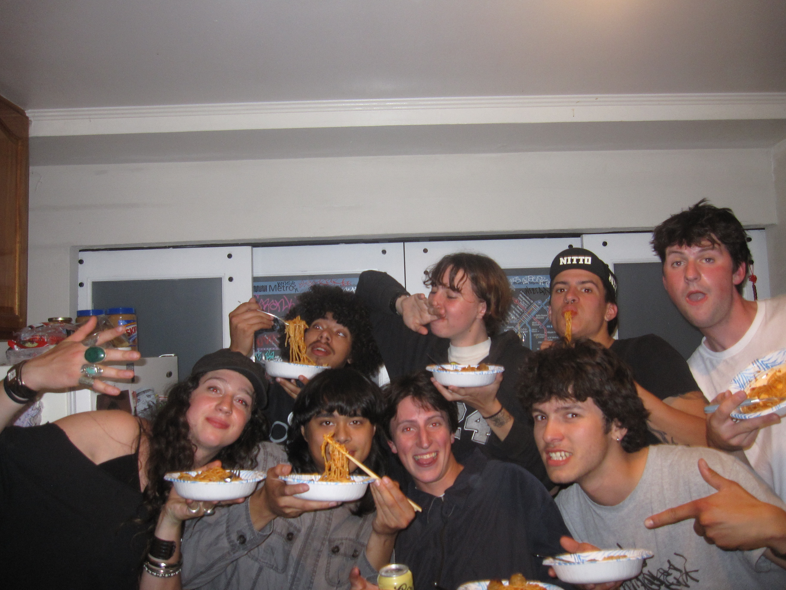

Whenever I was a kid bored on my computer, I wouldn't watch YouTube, I wouldn't play games, I would look through my Mom's digital family photos. I love the sense of warmth of those pictures, they were genuine. Most photos I had saved on my computer were around the years 2005–2010, before digital cameras were a given in everyone's life because of cellphones. Now we pose for photos with the thought they might be posted to social media, but in those earlier years, it was about remembering the moment, not faking it. During winter break of 2025, I started looking through these photos and videos again. I wanted a way to both archive them online and make them shareable. So I started the Instagram account @riding_with_mary.
The account's namesake came from a song called "Riding With Mary" from the punk band X. The song itself has little meaning in relation to the photos, but the band does. X is both my parents' favorite band. Instead of having a big art piece in our living room, we had a framed X poster. X reminds me of both my family and my childhood home, so I use that name as a personal nod to the years of photos I am trying to share.
I started out by only posting old photos of family friends and some archived footage of my neighborhood in the early 2000's. But eventually I decided to start taking new photos to put on the account. I wanted to capture the same genuine tone of these past photos. So what I decided to do is use the same exact camera from those old photos, the Canon SD880. The camera is nothing special, and the photos technically look worse than an iPhone, but they produce a very nostalgic image of the 2000's.
At first I started small, taking a few photos every couple days of my friends over winter break. I began posting them to a small group of friends that I sent the account to, but I didn't advertise it on any other social media I have. I never really intended for the account to become public or gain much attention outside of the people directly involved in the photos. To me, it mostly felt like a personal archive — almost like a digital photo album that I could continue adding onto over time. I liked the idea that the account was casual and genuine instead of carefully curated like most social media pages.
What surprised me was how quickly other people connected with the photos. Even though I never promoted the account myself, friends who appeared in the pictures started reposting them onto their own Instagram stories and accounts. As more people shared the photos, more mutual friends began following the page and recognizing people they knew in the posts. The account slowly stopped feeling like only my own project and started becoming something more collective. People would send me old photos they found on their phones or ask me to bring the camera to events because they liked the way the pictures looked compared to normal phone photos.
Over time, the page became less about nostalgia for my childhood and more about documenting the current lives of my friends in the same genuine way those old family photos once documented mine. Looking through the account now feels different than it did when I first started it. Instead of only being a personal collection of memories, it has turned into a shared archive of experiences that my friends and I can all look back on together. That is probably my favorite part of the project. Even though social media is usually temporary and fast moving, these photos feel more permanent. They capture small moments that normally would have been forgotten, and because so many different people contributed to sharing them, the account became something much larger than I originally expected.
